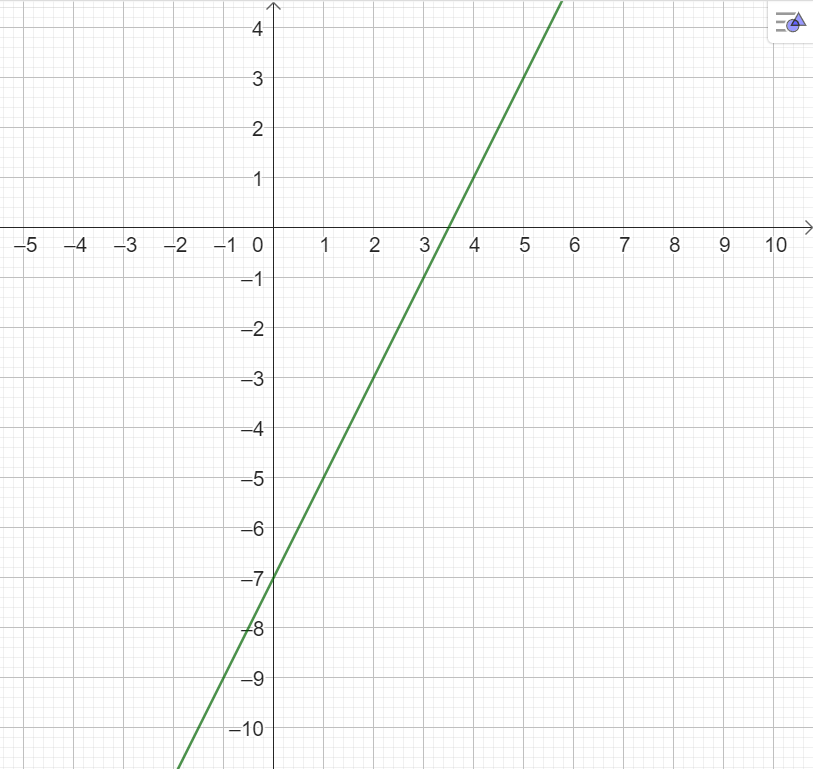
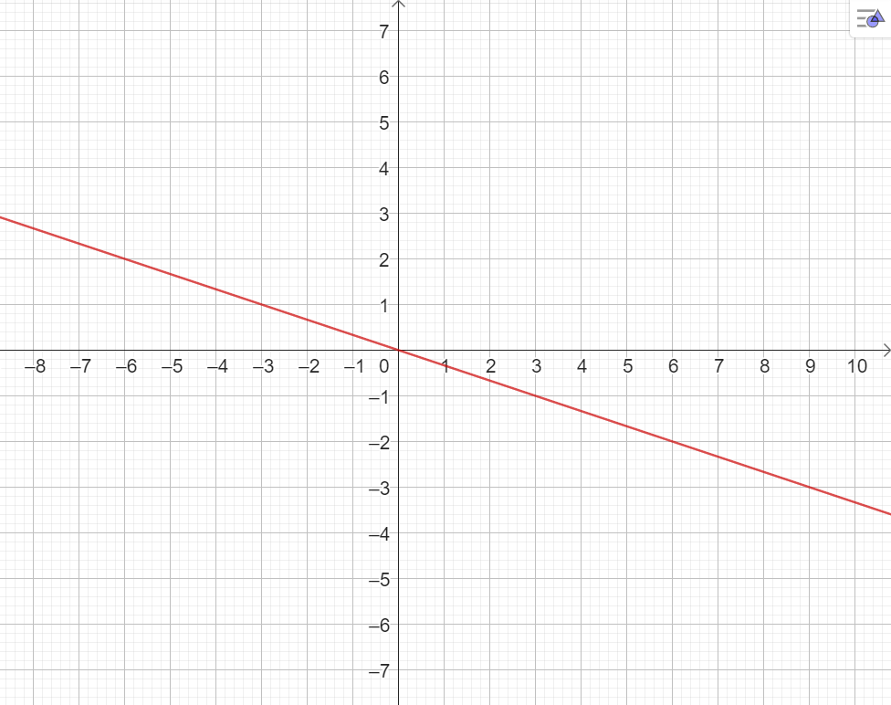

Lineære funksjoner
1. Funksjoner på formen \(f(x)=ax\)
Vi begynner med lineære funksjoner på formen \(f(x)=a\cdot x\), der \(a\) er et bestemt tall.
\(f(x)=3x\), \(g(x)=-2{,}5x\) og \(h(x)=\dfrac{x}{3}=\dfrac{1}{3} \cdot x\) er funksjoner på denne formen.
I en lineær funksjon er tallet \(a\) funksjonens stigningstall. Stigningstallet forteller hvor mye funksjonsverdien endrer seg når \(x\) øker med \(1\).
I eksemplene ovenfor er stigningstallet til \(f\) lik \(3\), stigningstallet til \(g\) lik \(-2{,}5\), og stigningstallet til \(h\) lik \(\dfrac{1}{3}\).
2. Funksjoner på formen \(f(x)=ax+b\)
En lineær funksjon kan skrives på formen \(f(x)=a\cdot x+b\), der \(a\) og \(b\) er bestemte tall.
I uttrykket \(f(x)=ax+b\) er \(a\) funksjonens stigningstall, og \(b\) kalles konstantleddet. Konstantleddet er funksjonsverdien når \(x=0\), og grafen skjærer derfor \(y\)-aksen i punktet \((0,b)\).
I eksemplene ovenfor er stigningstallene henholdsvis \(3\), \(\dfrac{1}{2}\) og \(-3\). Konstantleddene er henholdsvis \(7\), \(-3\) og \(-6\).
En funksjon på formen \(f(x)=ax\) er et spesielt tilfelle av \(f(x)=ax+b\), der konstantleddet \(b\) er lik \(0\). Grafen går da gjennom origo.
3. Beregninger
\(x\) er verdien vi setter inn i funksjonen, og \(f(x)\) er funksjonsverdien vi får ut.
For å finne funksjonsverdien for en bestemt \(x\)-verdi erstatter vi \(x\) med den oppgitte verdien i funksjonsuttrykket.
For å finne hvilken \(x\)-verdi som gir en bestemt funksjonsverdi, setter vi funksjonsuttrykket lik den oppgitte funksjonsverdien og løser likningen.
La \(f(x)=-2x+5\).
Funksjonsverdien når \(x=3\), er \(f(3)=-2\cdot3+5=-6+5=-1\).
Hvis vi vil finne hvilken \(x\)-verdi som gir funksjonsverdien \(7\), løser vi \(f(x)=7\):
Metodene gjelder for alle typer funksjoner. Vi kan alltid finne en funksjonsverdi ved å sette inn en \(x\)-verdi og regne ut uttrykket. Når vi skal finne en \(x\)-verdi ut fra en funksjonsverdi, må vi derimot kunne løse likningen som oppstår. Det kan vi foreløpig bare for enkelte typer funksjoner.
4. Grafer
Grafen til en lineær funksjon er en rett linje. For å tegne den kan vi bruke konstantleddet og stigningstallet.
- Vi plasserer først punktet der grafen skjærer \(y\)-aksen. Det har koordinatene \((0,b)\). Når \(b=0\), ligger punktet i origo.
- Derfra går vi én enhet mot høyre. Hvis stigningstallet er positivt, går vi opp; hvis det er negativt, går vi ned. Antall enheter opp eller ned bestemmes av stigningstallet.
Vi tegner grafen til funksjonen \(f(x)=2x-7\).
Konstantleddet er \(-7\), så vi starter i punktet \((0,-7)\) på \(y\)-aksen. Stigningstallet er \(2\): Når vi går én enhet mot høyre, går vi to enheter opp. Vi kan gjenta dette for å få flere punkter og tegne linjen nøyaktig.

Vi tegner grafen til funksjonen \(g(x)=-\dfrac{x}{3}\).
Konstantleddet er \(0\), så grafen går gjennom origo. Stigningstallet er \(-\dfrac{1}{3}\). Hvis vi går én enhet mot høyre, skal vi gå \(\dfrac{1}{3}\) enhet ned. Det er lite presist på et koordinatsystem, så vi kan i stedet gå tre enheter mot høyre og én enhet ned.

Når stigningstallet er en brøk, får vi ofte en mer nøyaktig tegning ved å gå like mange enheter horisontalt som nevneren og like mange enheter opp eller ned som telleren.